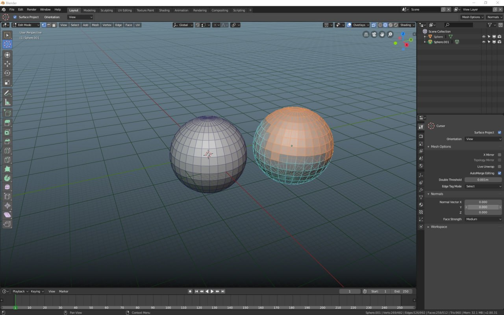
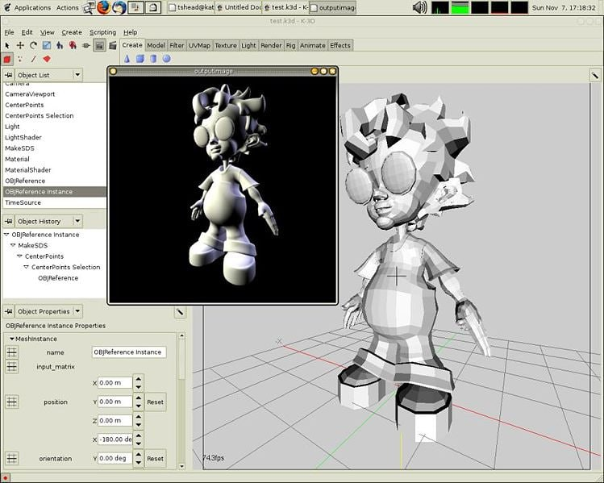
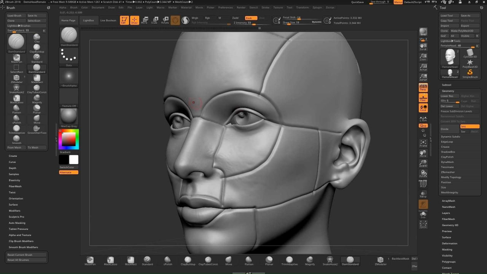
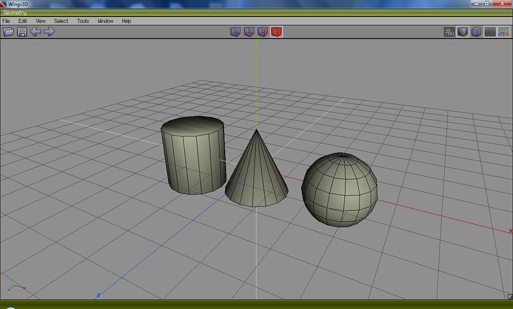
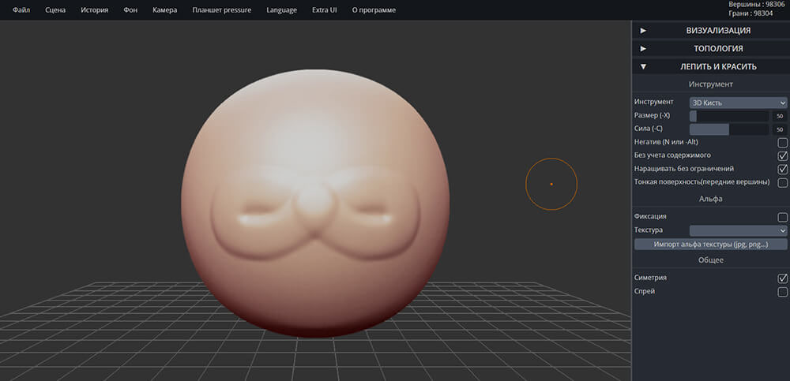
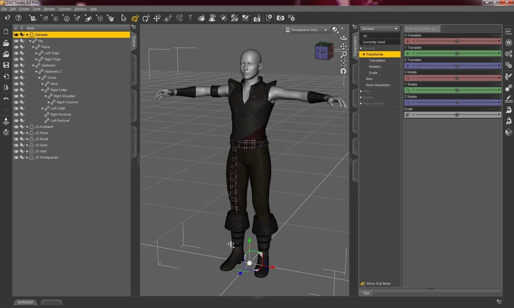
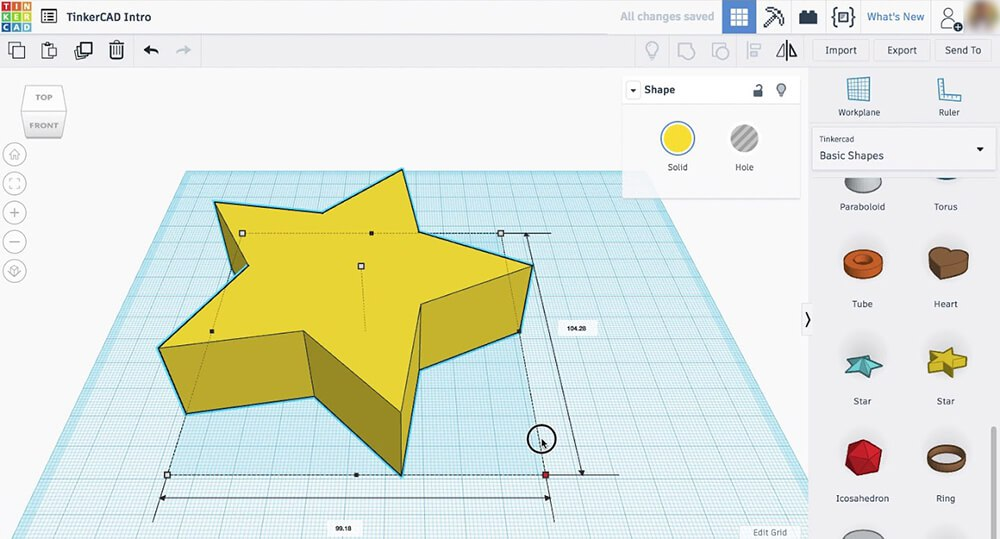
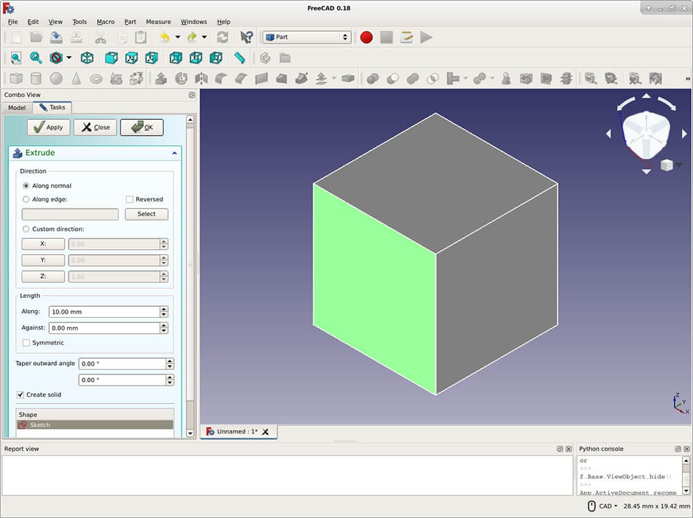

Cамо понятие 3D появилась только в 1960 году и представлялась собой сложные уравнения и вычисления.
Ещё тогда modeling было очень тяжело освоить и с ним тяжело было работать.
Американский учёный Айвен Сазерленд создал первый компьютерный векторный редактор — программно-аппаратный комплекс Sketchpad.
General Motors совместно с IBM представила систему автоматизированного проектирования DAC-1
Группа учёных и инженеров под руководством П. Н. Константинова создала компьютерную математическую модель движения кошки
Сазерленд и Эванс открыли первую компанию по производству компьютерной графики.
С середины 1990-х годов трёхмерная графика стала широко применяться в инженерии.
Для чего использовать: скульптинг и симуляция движений.
Уровень: профессионал.
Стоимость: бесплатно.
Blender — программа для скульптинга с открытым исходным кодом. Она помогает создавать трехмерную графику, добавлять визуальные пресеты и разрабатывать полнометражные анимационные фильмы. Вы можете добавлять встроенные фигуры, связывать объекты, подключать источники данных и рассчитывать пути движения. Также проектировщик предлагает инструменты для преобразования медиа: поворот, масштабирование и отображение. Вы можете удалять, объединять или дублировать объекты, применять множество эффектов: имитация меха, взрыва, дыма и жидкости.
Для чего использовать: создание анимированных 3D-моделей.
Уровень: любитель.
Стоимость: бесплатно.
K-3D понравится тем, кто работает в сфере строительства, дизайна, машиностроении, ювелирном деле. На выходе получаются реалистичные проекты, чтобы заказчик мог оценить, как будет выглядеть результат. Радует, что есть интерактивная система обучения. В коллекции программы представлено много шаблонов. При необходимости ее можно расширить путем установки дополнительных плагинов.
Для чего использовать: 3Д-скульптурирование объектов.
Уровень: профессионал.
Стоимость: от $39.95 в месяц, есть бесплатная пробная версия.
ZBrush — утилита для разработки виртуальной скульптуры и цифровой живописи для Windows. Применяется при производстве фильмов, VFX-проектов, видеоигр, иллюстраций, рекламных материалов, в автомобильной и промышленной сфере. Фигуры можно тянуть, сжимать, лепить, толкать и многое другое. В дополнение к скульптурированию, софт имеет функции для 2D-рисования. ZBrush доступен на 45-дневный пробный период. Затем вы можете приобрести бессрочную лицензию за 895 долларов или оплатить ежемесячную подписку стоимостью 39.95$.
Для чего использовать: трехмерное моделирование.
Уровень: любитель.
Стоимость: бесплатно.
Wings 3D — средство скульптурирования объектов. Предлагает стандартные инструменты для коррекции формы элемента, зеркального отражения всех изменений, лепки и т.д. Позволяет применять текстуры, указывать UV-координаты, настраивать материалы. Wings можно загрузить бесплатно. Редактор распространяется с открытым исходным кодом, который позволяет самостоятельно расширить функционал софта. Из недостатков можно отметить, что утилита не поддерживает анимированные мультимедиа.
Для чего использовать: скульптурирование фигур.
Уровень: любитель.
Стоимость: бесплатно.
SculptGL — онлайн-программа для 3D рисования, скульптинга фигур и оформления реалистичных объектов. Запускается во всех популярных браузерах и не требует установки. Вы сможете настроить фон, выбрать режим камеры, указать тип шейдера. Лепка выполняется простыми инструментами: кисть, закручивание, складка, масштабирование и т.д. Также можно рисовать поверх медиа любым цветом и применять маски.
Для чего использовать: моделирование героев.
Уровень: любитель.
Стоимость: бесплатно при регистрации.
Daz Studio предназначена для моделирования мультяшных персонажей, героев комиксов и иллюстраций. Имеется приличная коллекция шаблонов. В ней есть мифические существа, костюмы, дополнительный реквизит, предметы интерьера. Моделей можно рассмотреть с разных сторон, менять их положение как угодно. Отличается высоким качеством рендеринга.
Для чего использовать: проектирование деталей и предметов.
Уровень: новичок.
Стоимость: бесплатно.
Tinkercad — веб-программа для рендеринга 3D моделей от компании Autodesk. Она основана на конструктивной твердотельной геометрии (CSG). Эта технология позволяет создавать сложные проекты, комбинируя простые объекты. Также можно добавлять электронные схемы, чтобы оформить мультимедиа с подходящим светом и движением. Макет может отображаться в 3Д-режиме, в качестве блоков или кирпичей. Итог можно сохранить в трех форматах (STL, OBJ и SVG) или распечатать на 3Д-принтере. Для начала проектирования необходимо создать учетную запись. Затем вы можете сразу приступить к редактированию или пройти обучение.
Для чего использовать: конструирование деталей и архитектурных проектов.
Уровень: любитель.
Стоимость: бесплатно.
FreeCAD — это настраиваемое средство 3Д-конструирования. Оно помогает пользователям создать проекты в области машиностроения, архитектуры, промышленности. ПО позволяет отрисовывать эскизы и переводить чертежи в трехмерный контент, загружать файлы популярных медиаформатов и производить качественный рендеринг макетов. Редактор можно скачать бесплатно с официального сайта. Он имеет открытый исходный код, который можно изменить для добавления новых функций. FreeCAD работает на операционных системах Windows, MacOS, Linux.
Для чего использовать: проектирование предметов.
Уровень: новичок.
Стоимость: бесплатно.
В MeshMagic 3D можно нарисовать трехмерный объект, а после конвертировать его в 3D. Также позволяет обрабатывать готовые проекты в формате 3DP, 3DS, 3MF, OBJ, PLY, STL. Справляется с построением простых фигур: кубов, сфер, многогранников. Интерфейс MeshMagic 3D выглядит безобидно и осваивается в короткие сроки. Большую часть рабочего пространства занимает вид в перспективе. Сбоку располагаются изображения, соответствующие каждой из трех осей.